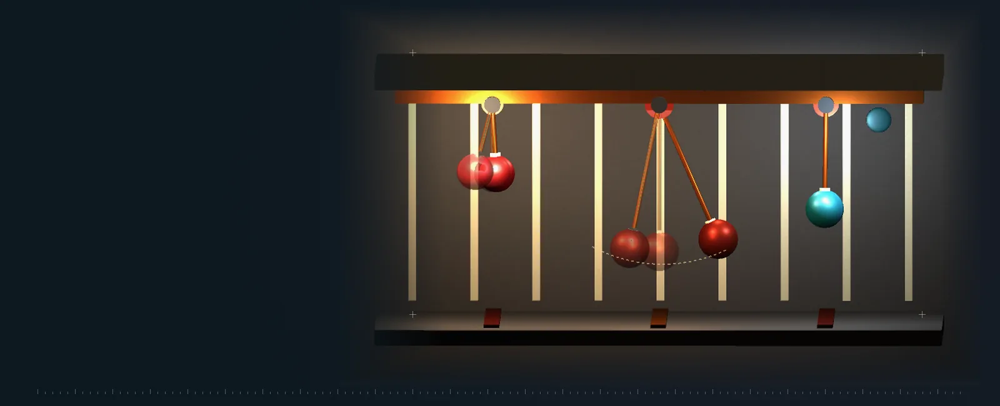

CaveBench: Benchmarking Abductive Physical Reasoning from Internal Observations
From inside a physical apparatus, can a vision–language model work out what changed outside?

Tsinghua University * Equal contribution · † Corresponding author
Dataset
Each episode begins with an apparatus description and a view from inside it. As the scene changes, the model reconstructs the controls applied at each event.
- Apparatuses
- 20
- Physical domains
- 5
- Test questions
- 1,180
The dataset contains 9,000 training, 1,000 validation and 200 test episodes. Test questions span one to six events.
Test set composition by domain
| Domain | Apparatuses | Episodes | Questions | Single-label events | Two-label events |
|---|---|---|---|---|---|
| Dynamics | S01–S04 | 40 | 240 | 140 | 100 |
| Thermal physics | S05–S08 | 40 | 240 | 68 | 172 |
| Electromagnetism | S09–S12 | 40 | 220 | 203 | 37 |
| Acoustics | S13–S16 | 40 | 240 | 108 | 132 |
| Optics | S17–S20 | 40 | 240 | 179 | 61 |
Each episode contributes six events. S11 (dielectric response) has questions with three to six events.
Case studies
Editable slides ↓Explore six events inside each apparatus. Open a case sheet to see the observations, the model’s answer and the recorded controls together.
Browse all 20 apparatuses
Benchmark overview

Construction and evaluation

Physical design and example questions


Leaderboard
A sequence earns credit when its control set matches the reference at every event. Simultaneous controls may appear in any order.
Detailed tables
Analysis
Physical reasoning across domains and events
All 27 model configurations score lower on six-event questions than on single-event questions. Gemini 3.8 Flash drops from 60.5% to 21.5%, and MiniMax M3.1 Flash drops from 38.4% to 12.5%.
Electromagnetism is the strongest domain for MiniMax M3.1 Flash at 27.5%. It is the lowest-scoring domain for both Sol and Terra, at 57.5% and 37.5%, respectively.
Learning to recover a sequence
On Qwen3.5-9B, supervised fine-tuning raises six-event accuracy from 0.5% to 20.0%. Averaged over two seeds, adding SimPO brings it to 31.8% and adding KTO brings it to 14.5%. The two methods score similarly on single-event questions.
Each SimPO run solves 27 six-event questions that SFT missed. Of the 40 sequences SFT recovered, the two runs retain 36 and 37, respectively. Compare runs by question length.

Reasoning effort
Across the same 200 six-event questions, raising reasoning effort from low to high changes GPT-6.1 Sol’s accuracy from 59.5% to 74.0% and Gemini 3.8 Flash’s from 15.5% to 8.0%.

Error analysis
Of the 100 incorrect answers examined, the primary error concerns visual identification in 38 cases, evidence integration in 31, physical inference in 24 and action composition in seven.